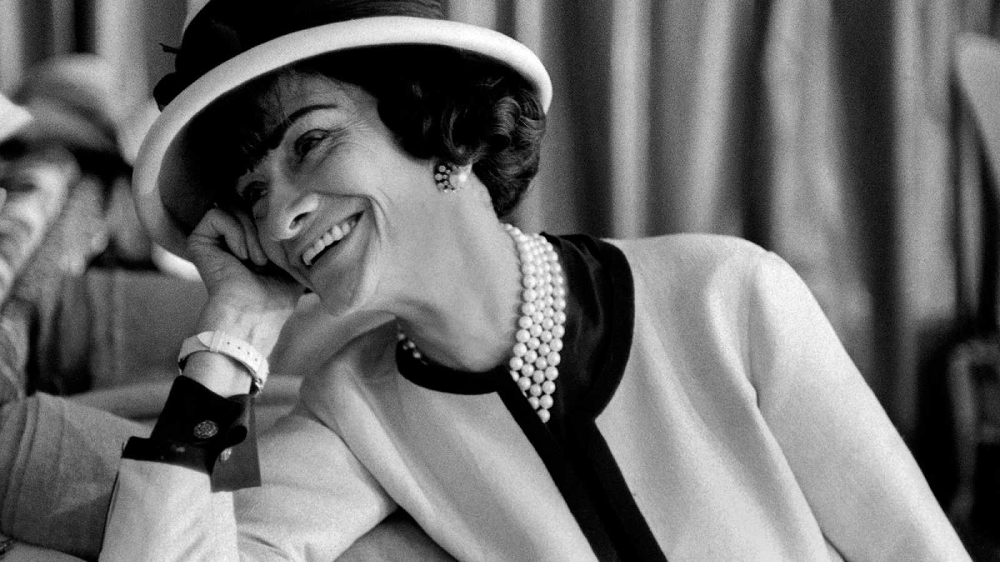

¡Hola! Soy CSS, soy un lenguaje de estilos y te ayudaré a que tus páginas webs tengan un gran diseño, ya sabes, sin estilo no podemos salir a la red.
"La moda pasa, el estilo jamás."
Cocó Chanel
"La simplicidad es la clave de la verdadera elegancia."
Cocó Chanel
| Nombre | Apellido | Edad |
|---|---|---|
| Alicia | Salas | 20 |
| Eva | Sanchez | 14 |
París 1883- 1971
Es una de las diseñadoras más reconocidas de la historia. Destacó por ser y una de las más innovadoras durante la Primera Guerra Mundial. Produjo una ruptura con la opulenta y poco práctica elegancia de la Belle Époque y creó una línea de ropa informal, sencilla y cómoda. Criada en un orfanato de monjas, fue conocida por su firme determinación, ambición y vitalidad que aplicaba a su vida profesional y social.
